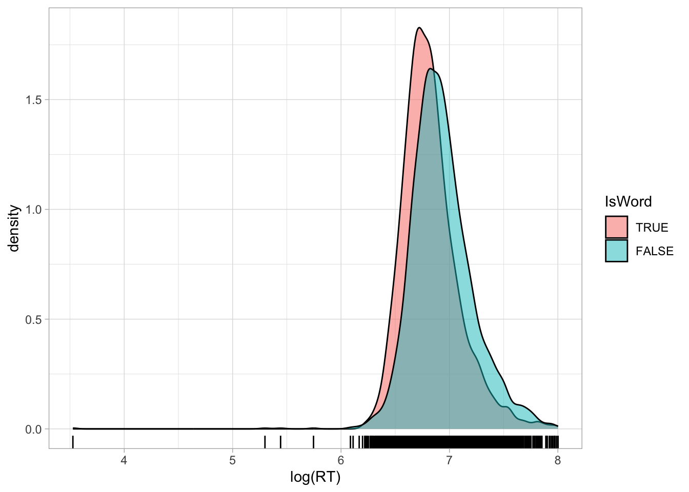
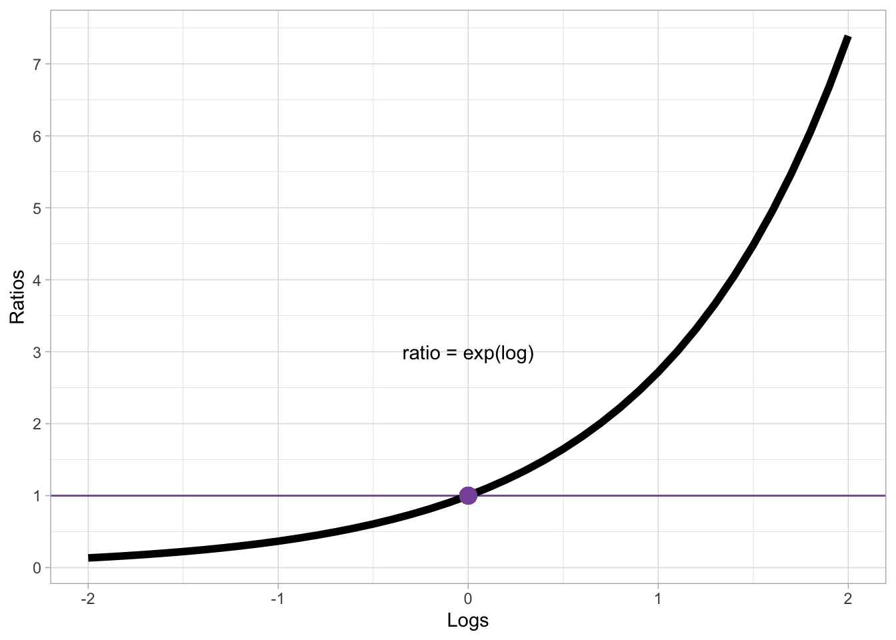

mald <- readRDS("data/tucker2019/mald_1_1.rds")31 Log-normal regression
In Chapter 18, we talked about skewness of distributions in relation to the density plots of reaction times. In Chapter 21, we further explained that it is the onus of the researcher to decide on a distribution family when fitting regression models and we said that, in the absence of more specific knowledge, the Gaussian distribution is a safe assumption to make. Note that the choice of distribution family should be based as much as possible on theoretical grounds (as opposed to empirical). In other words, you shouldn’t plot the variable to check with distribution it might follow (more on this in the Important box below).
There are heuristics one can follow to pick a theoretically grounded distribution. The major ones are listed in Section B.2, so you can refer to that section in the appendix, but in this chapter we will focus on one type of variables and the default distribution choice: i.e. variables that can only take on values that are positive numbers. These variables, in the absence of more specific knowledge, can be assumed to be from a log-normal distribution.
31.1 Log-normal distribution
The log-normal distribution is a continuous probability distribution of variables that can only be positive and not zero. It has two parameters: the mean \(\mu\) and the standard deviation \(\sigma\). These are the same parameters of the Gaussian distribution, but the parameters of the log-normal distribution are in logged units. The name log-normal comes from the fact that variables that are log-normal approximate a Gaussian (aka normal) distribution when we take the logarithm (log) of the values. In other words, the variable is assumed to be Gaussian on the log scale, rather than on the natural scale. Mathematically, we represent the log-normal distribution with \(LogNormal(\mu, \sigma)\).
Typical examples of continuous variables that can only be positive and not zero are:
Phonetic durations (segments, words, sentences, pauses, …).
Frequencies like f0 and formants. Speech rate.
Reaction times.
I will illustrate the nature of log-normal variables using reaction times (RT) from Tucker et al. (2019). Let’s read the data and plot RTs depending on the word type. Recall we ran a Gaussian regression model of the data in Chapter 27.
Code
mald |>
ggplot(aes(RT, fill = IsWord)) +
geom_density(alpha = 0.8) +
geom_rug(alpha = 0.1) +
scale_fill_brewer(palette = "Dark2")
We have already observed in Chapter 27 that the distribution of RTs is right-skewed: which is, there are more extreme values to the right of the distribution than what would be expected if this were a Gaussian variable. This is because RTs are naturally bounded to positive numbers only, while Gaussian variables are unbounded. A common procedure, which you will likely encounter in the literature, is to take the logarithm of RTs (and other log-normal variables), or simply to log them: the logarithm of a log-normal variable transforms the variable so that it approximates a Gaussian distribution. In R, the logarithm function is simply applied with log() (this uses the natural logarithm, which is the logarithm with base \(e\); if you need a refresher, see Introduction to logarithms).
Code
mald |>
ggplot(aes(log(RT), fill = IsWord)) +
geom_density(alpha = 0.8) +
geom_rug(alpha = 0.5) +
scale_fill_brewer(palette = "Dark2")

Figure 31.2 shows the densities of logged RTs for real and nonce words. Note how the density curves are less skewed now compared to Figure 31.1. You will also note that the some lower RTs values now look more extreme than in the first figure: logging a variable compresses the scale more at higher values and spreads the scale more at lower values, which results in the reduction of right-skew, but also in making very low values look more extreme. Before moving onto discussing what to do with outliers, an important clarification is due.
There are cases where the density plot is a combination of multiple underlying distributions with different means and SDs that makes it look as if it is skewed. For example, the following code creates a mixture of three Gaussian distributions of the same variable, but coming from three different groups, each with a slightly higher mean and SD than the first group. Figure 31.3 shows a single density curve for the data (Figure 31.3 (a)), and the density plots for the individual groups (Figure 31.3 (b)). In the single density plot, we might be given the impression that this is a log-normal variable because of the right skew, but in fact, when plotting the density curves of the individual groups we can see that the distribution in each group is quite symmetric (not skewed) and quite Gaussian-like.
set.seed(123)
# Sample sizes
n <- 2000
# Three different normal distributions
x1 <- rnorm(n, mean = 20, sd = 0.5)
x2 <- rnorm(n, mean = 21, sd = 1.5)
x3 <- rnorm(n, mean = 22, sd = 3)
dat <- tibble(
x = c(x1, x2, x3),
gr = rep(c("a", "b", "c"), each = n)
)

Deciding if a variable is log-normal should be based on theoretical considerations rather than on the empirical distribution. Ask yourself, before seeing the data: is this variable continuous and can it only take on positive values? If the answer is yes, then assuming a log-normal distribution is safe.
31.2 Dealing with outliers
Very extreme values are generally called outliers: an outlier is a value that is more extreme than what the distribution would indicate. The definition of outlier is quite vague and there are different ways of operationalising “outlierness” (i.e. to determine if a value is an outlier). There are also different camps as to what to do with outliers, particularly in regard to inclusion/exclusion criteria. I side with the camp that suggests not to exclude outliers, if they are real outliers. In most cases, thinking about errors is a much more useful way of deciding which values to include or exclude. For example, in our RT data there is one observation of 34 ms. The second lowest RT is 200 ms. Given the task participants had to complete, a lexical decision task, it is unlikely that they could thoughfully answer after only 34 ms (that is a very short time, a vowel is usually longer than that!). So we could argue that that was an error: the participant mistakenly pressed the button before thinking about the answer.
We have a good theoretical reason to exclude that observation. We would not call this an outlier, because it is an error. You should reserve the word outlier only for extreme observations that are not the result of an error, misunderstanding or the like. It also very often depends on the specific task at hand: for certain task, an RT of 5 seconds might still be acceptable, but for others it probably means the participant was distracted. This type of observations do not represent the process one is interested in, so they are best left out. But if there are observations that are extreme, but not so extreme to believe that they come from errors or other causes, then it is theoretically more sound to keep them.
Since we have established that this very low RT observation of 34 ms must be an error, let’s drop it from the data before moving on onto modelling.
mald_filt <- mald |>
filter(RT > 34)31.3 Modelling RTs with a log-normal regression
The problems arising from assuming a Gaussian distribution for RTs is visually obvious when comparing the empirical distribution of the observed RTs with the predicted distribution from a Gaussian model. Let’s reload the Gaussian model from Chapter 27.
rt_bm_1 <- brm(
RT ~ IsWord,
family = gaussian,
data = mald,
seed = 6725,
file = "cache/ch-regression-cat-rt_bm_1"
)We can plot the empirical and predicted distribution using the pp_check() function from the brms package. The function name stands for posterior predictive check: in other words, we are checking how the predicted joint posterior distribution of the data looks like when compared with the empirical distribution. The joint posterior probability distribution is simply the probability of the outcome variable as predicted by the posterior probability distributions of the parameters of the model. The Gaussian regression above correspond to the following mathematical equations:
\[ \begin{align} RT_i & \sim Gaussian(\mu_i, \sigma)\\ \mu_i & = \beta_0 + \beta_1 \cdot w_i\\ \end{align} \]
The joint posterior distribution of the outcome \(RT\) is the \(Gaussian(\mu, \sigma)\) distribution in the model. This is based on the posterior probability of the regression coefficients \(\beta_0, \beta_1\) and the overall standard deviation \(\sigma\). Remember that inference in the context of Bayesian regression models using MCMC is based on the MCMC draws. Each draw has sampled a value for the model parameters. So for each draw we can reconstruct one joint posterior distribution based on the specific parameter values of that draw. It is useful to plot the joint posterior based on several draws, but since this computation is expensive, it is usually best to use just some and not all the draws. There isn’t a specific number and by default pp_check() uses 10 draws. In most cases these suffice. In the following code I set the number of draws to 50 just to illustrate how to use the ndraws argument.
Figure 31.4 shows the output of the pp_check() function. The first argument of the function is simply the model object, rt_bm_1. We set ndraws = 50 to use 50 random draws from the MCMC draws to reconstruct joint posteriors. These are in light blue in the figure. The dark blue, thicker line is the empirical density of the data, the same density you would get with geom_density(). It is quite obvious that the reconstructed posterior densities do not match the empirical density. Values below 500 ms are over-estimated by the model (in other words, the model over-predicts the presence of lower RT values) and similarly values between 1000 and 1500 ms are over-estimated. The empirical density of the data is much more compact around the peak of the distribution, compare to the posteriors from the model.
pp_check(rt_bm_1, ndraws = 50)
A common reason for the failure of the posterior probability to correctly reconstruct the empirical distribution is the incorrect choice of the family distribution (another notable reason is not including important predictors in the model, like in the three Gaussian groups from the example above: a Gaussian model of that data without group as a predictor will incorrectly estimate values). We have learned above that RT values can be assumed to be log-normal, rather than Gaussian, because they are continuous and can only be positive.
We will proceed then with modelling RTs using a log-normal regression model. This is just a regression model with a log-normal family as the distribution family for the outcome variable, here RTs. Here are the model formulae:
\[ \begin{align} RT_i & \sim LogNormal(\mu_i, \sigma)\\ \mu_i & = \beta_0 + \beta_1 \cdot w_i\\ \end{align} \]
Reaction times \(RT\) are distributed according to a log-normal distribution with mean \(\mu\) and SD \(\sigma\).
The mean \(\mu\) depends on the word type of the observation (\(w\)).
Since we are using a log-normal distribution, \(\mu\) and \(\sigma\) are on the log scale. In other words, the log-transformation of the outcome variable is handled by the model, so you don’t have to log RTs yourself.
The estimates of the regression coefficients \(\beta_0, \beta_1\) and the \(\sigma\) parameter will be in logged milliseconds (because the RTs in the data are measured in milliseconds). The following code fits a log-normal regression to the RT values from the filtered MALD data. We are also modelling the effect of word type (IsWord) on RTs.
rt_bm_2 <- brm(
RT ~ IsWord,
family = lognormal,
data = mald_filt,
cores = 4,
seed = 6725,
file = "cache/ch-regression-lognormal-rt_bm_2"
)Before we learn how to interpret the model summary of a log-normal regression, let’s check the posterior predictive plot, shown in Figure 31.5. Look at how the posterior predictive distributions match the empirical distribution much better, compared to Figure 31.4. They are not perfect, but there is indeed much improvement with a log-normal model. The remaining differences are probably because RTs are not specifically log-normal, and other distributions have been proposed, like the exponential-Gaussian, or ex-Gaussian distribution. We will not treat these alternatives here: just remember that a log-normal distribution is a good initial assumption for continuous variables that are bounded to positive numbers.
pp_check(rt_bm_2, ndraws = 50)
31.4 Interpreting log-normal regressions
Interpretation of log-normal regression models is not that different from interpreting Gaussian models, with the difference that estimates are in the log-scale. Let’s print the model summary.
summary(rt_bm_2, prob = 0.8) Family: lognormal
Links: mu = identity; sigma = identity
Formula: RT ~ IsWord
Data: mald_filt (Number of observations: 4999)
Draws: 4 chains, each with iter = 2000; warmup = 1000; thin = 1;
total post-warmup draws = 4000
Regression Coefficients:
Estimate Est.Error l-80% CI u-80% CI Rhat Bulk_ESS Tail_ESS
Intercept 6.82 0.01 6.82 6.83 1.00 4019 2995
IsWordFALSE 0.11 0.01 0.10 0.12 1.00 3585 2510
Further Distributional Parameters:
Estimate Est.Error l-80% CI u-80% CI Rhat Bulk_ESS Tail_ESS
sigma 0.27 0.00 0.27 0.27 1.00 3294 2989
Draws were sampled using sampling(NUTS). For each parameter, Bulk_ESS
and Tail_ESS are effective sample size measures, and Rhat is the potential
scale reduction factor on split chains (at convergence, Rhat = 1).As usual, the first lines give us information about the model. The family is lognormal. The link functions are indentity for both the mean mu and the standard deviation sigma (these are \(\mu\) and \(\sigma\) from the model formula above). You have encountered link functions in the previous chapter, when you learned about Bernoulli models. A Bernoulli model uses the logit link to model probabilities, which are bounded between 0 and 1. The log-normal model we just fitted uses the identity function instead: the identity function simply returns the same values, in other words the values are not transformed. This might look surprising because we know that the estimates are on the log scale, not on the natural scale, so we would assume a log link.
However, link functions are applied to model parameters, rather than on the outcome variable. The log-transformation we discussed in log-normal models is applied to the outcome variable directly. Because of this, the model parameters are already on the log-scale and don’t have to be further transformed. That’s why the link for the mean and SD is the identity function. If you look back at Chapter 22 and Chapter 24, you will see that the links are also the identity function in Gaussian models and Gaussian regression models. This is because with Gaussian families, the model parameters are on the original scale and are not transformed (the estimates for the models of RTs were in milliseconds because RTs were measured in milliseconds).
The Formula, Data and Draws rows of the summary have no surprises. Let’s focus on the Regression Coefficients table (repeated here with fixef()).
fixef(rt_bm_2, probs = c(0.1, 0.9)) |> round(2) Estimate Est.Error Q10 Q90
Intercept 6.82 0.01 6.82 6.83
IsWordFALSE 0.11 0.01 0.10 0.12Inteceptis \(\beta_0\): the mean log-RTs when the word is real.IsWordFALSEis \(\beta_1\): the difference in log-RTs between nonce and real words.
You see that, apart from the fact that the estimates are about log-RTs rather than RTs in milliseconds, the interpretation of the estimates is the same as in the Gaussian regression model you fitted in Chapter 27. The model suggests that the log-RTs of nonce words are 0.1-0.12 higher than the log-RTs of real words.
31.5 Logs and ratios
Differences of logged variables, aka log differences for short, can also be interpreted by converting them to the ratio of the difference. Converting log differences to ratios is done by applied the inverse of the logarithm function, which is the exponential function: in R, this is simply exp(). Figure 31.6 illustrated the relationship between logs on the x-axis and ratios on the y-axes (logs are converted to ratios with exp()).
Code
log_exp <- tibble(
log = seq(-2, 2, by = 0.1),
ratio = exp(log),
) %>%
ggplot(aes(log, ratio)) +
geom_hline(yintercept = 1, colour = "#8856a7") +
geom_line(linewidth = 2) +
geom_point(x = 0, y = 1, colour = "#8856a7", size = 4) +
scale_x_continuous(breaks = seq(-2, 2, by = 1), limits = c(-2, 2)) +
scale_y_continuous(breaks = seq(0, 7)) +
annotate("text", x = 0, y = 3, label = "ratio = exp(log)") +
labs(
x = "Logs",
y = "Ratios"
)
log_exp

Log 0 corresponds to ratio 1. Positive logs correspond to increasingly larger ratios, while negative logs correspond to increasingly smaller ratios. Note however that a ratio can only be positive! There are no negative ratios. Ratios can be thought of as a the number to multiply the reference number by: if the log difference is 0, the ratio is 1 which means you multiply the reference value by 1. If you multiply by 1, you simply get the same value: for example, if the reference (like the model intercept) is 6 then the value resulting from the difference is also 6. In other words, there is no difference.
Logs that are greater than 0 correspond to ratios that are greater than 1. Since we multiply the reference value by the ratio value, positive logs correspond to greater values relative to the reference. For example, with a baseline value of 6 and a ratio of 1.5 (approximately log = 0.405), the value resulting from the ratio is \(6 \times 1.5 = 9\). Ratios can also be interpreted as percentages: a ratio of 1.5 corresponds to a 50% increase (50% of 6 is 3 and \(9 = 6 + 3\)). Conversely, logs that are smaller than zero corresponds to ratios that are smaller than 1, which in turn correspond to percentage decreases: For example, with a baseline 6 and a ratio of 0.8, there is a 20% decrease (\(1 - 0.8 = 0.2\)): \(6 \times 0.8 = 4.8\), or \(6 - (6 \times 0.2)\).
Ratios are useful with log-normal variables because the magnitude of the difference depends on the baseline. This is similar to log-odds: if a Bernoulli model suggests an increase of 0.3 log-odds, the difference in percentage points depends on the baseline value, as illustrated by the following code:
round(plogis(1 + 0.3) - plogis(1), 2)[1] 0.05round(plogis(2 + 0.3) - plogis(2), 2)[1] 0.03When the baseline log-odds is 1 (corresponding to about 73%), a 0.3 log-odd increase corresponds to a 5 percentage point increase (from 73 to 78%). When the baseline is 2 (about 88%) the same increase corresponds to a 3 percentage point increase. With log estimates, the same principle applies: for the same log difference, the difference in the original scale (like milliseconds for RT) is greater with larger baselines.
conditional_effects(rt_bm_2)
rt_bm_2_draws <- as_draws_df(rt_bm_2)
rt_bm_2_draws <- rt_bm_2_draws |>
mutate(
real_log = b_Intercept,
nonce_log = b_Intercept + b_IsWordFALSE,
real = exp(real_log),
nonce_log = exp(nonce_log)
)